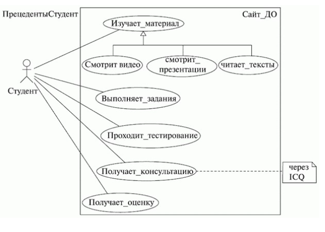
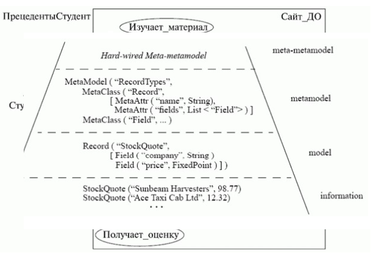
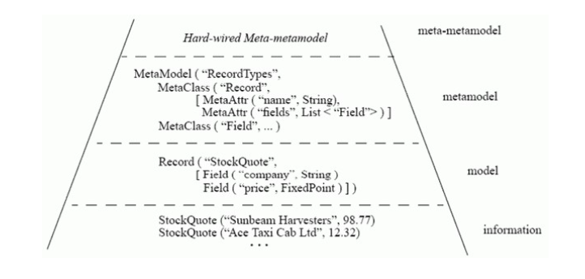

12Способы использования языка
Румбах присоединился к Бучу в Rational Inc. Они объединили свои нотации и создали первую
версию UML. В 1995 году на конференции OOPSLA они представили его как Unified Method,
который потом и получил название UML. Чуть позже к ним присоединился Якобсон, который
добавил к результатам их труда элементы Objectory и начал работу над Rational Unified Process
(RUP). В 1997 году UML был отправлен в Object Management Group (OMG) для стандартизации.
Кроме трех нотаций "трех амиго" UML вобрал в себя элементы многих других методологий.
Начать хотелось бы с демонстрации известной картинки, которая уже более двух десятилетий
"живет" в Интернете, но источник ее никому не известен (если кто-то из читателей сможет
пролить свет на ее происхождение, автор будет очень благодарен за информацию). Эта картинка
прекрасно иллюстрирует типичный процесс создания продукта, или "решения" (поскольку
продукт решает проблему заказчика), как любят говорить в Microsoft.

Рис. 1.
Здесь мы видим все проблемы программной инженерии, в частности проблемы с коммуникацией
и пониманием, вызванные отсутствием четкой спецификации создаваемого продукта. Так вот,
авторы UML определяют его как графический язык моделирования общего назначения (т. е. его
можно применять для проектирования чего угодно - от простой качели, как на рисунке, до
сложного аппаратно-программного комплекса или даже космического корабля),
предназначенный для спецификации, визуализации, проектирования и документирования всех
артефактов, создаваемых в ходе разработки.
Итак, UML в первую очередь - это спецификации. Заглянем снова в глоссарий и обнаружим, что
Спецификация - подробное описание системы, которое полностью определяет ее цель и
функциональные возможности. Различают:
• словесные спецификации на естественном языке;
• модельные спецификации;
• формальные спецификации.
Не следует также забывать, что заказчик и разработчик имеют, как правило, абсолютно разное
понимание смысла этого артефакта. А ведь кроме этого есть еще аналитики, менеджеры,
бизнесконсультанты... Каждый из них называет спецификации по-своему: постановка задачи,
требования пользователя, техническое задание, функциональная
спецификация, архитектура системы... Причем все эти люди, являясь специалистами в
абсолютно разных предметных областях, говорят каждый на своем языке и зачастую просто не
понимают друг друга. Вот потому-то и возникает проблема, представленная на рисунке,
проблема, которую может решить только наличие единого, унифицированного средства создания
спецификаций, достаточно простого и понятного для всех заинтересованных лиц.
Как уже говорилось выше, различают спецификации трех видов. Словесные спецификации на
естественном языке как раз и вызывают массу проблем, поскольку создаются разными
специалистами на "их языке". Другим видом спецификаций являются формальные
спецификации. Действительно, описание спецификации с помощью строгого математического
языка было бы чудесным решением всех проблем, т. к. сам способ записи исключал бы малейшие
неоднозначности. Да, в математике есть, например, алгебра высказываний, с помощью которой
можно пытаться создавать технические задания на разработку некоторых приложений. Проблема
кроется в слове "некоторых". Понятно, что формальная спецификация является, по сути,
математической моделью задачи и потому для вычислительных задач все выглядит достаточно
просто. Формализация же задач из других областей знаний может оказаться более сложной и
трудоемкой проблемой, чем разработка самого приложения ввиду отсутствия четкой
математической модели. Один из принципов прикладной "мерфологии" гласит, что лучшей
спецификацией программы является ее текст. Так же, как и большинство остальных законов
Мерфи, это утверждение просто поражает своей правдивостью...
Когда мы говорим о том, что UML - это средство визуализации, мы имеем в
виду модельные спецификации. Все мы знаем, как иногда трудно заставить себя "вникнуть" в суть
материала, излагаемого в очередном учебнике или мануале. Изучение чего-то нового идет
гораздо проще, если документ содержит не только текст, а еще и иллюстрации к нему. А если
руководство или учебник выглядят как картинки с подписями (вспомните майкрософтовские
учебники и трейнер-киты или руководства пользователя мобильных телефонов!), то усвоение
нового материала происходит еще проще и эффективнее. Недаром до сих пор так популярны
комиксы, которые также представляют собой картинки с текстом!
Так вот, такие картинки с подписями наглядны и интуитивно понятны, причем почти однозначно
понимаются любыми заинтересованными лицами, так что могут использоваться в качестве
средства общения между людьми. UML позволяет создавать такие простые и понятные картинки
(модели), описывающие систему с разных сторон, которые можно показать заказчику и обсудить
с ним, т. е. служит средством коммуникации в команде. Посмотрите на рисунок ниже. Все ведь
понятно, правда?

Рис. 2.
Перейдем к проектированию. Да, UML позволяет строить модели программных систем (вообще
говоря - ЛЮБЫХ систем). По этим моделям потом может производиться генерация каркасного
кода проектируемых приложений. Более того, возможен процесс, который часто называют
"реверс-инжинирингом", - т. е. создание UML-модели из существующего кода приложения. Не
будем сейчас обсуждать качество получающегося кода или моделей при реверс-инжиниринге.
Пока оно весьма далеко от идеала, но ведь технологии и инструменты постоянно
совершенствуются, так что можно надеяться, что когда-нибудь мы сможем создавать приложения
визуально, не прибегая к языку программирования, а пользуясь лишь UML...
И последнее из этого набора слов - " документирование ". По большому счету, UML-модели
сами по себе уже являются документами (и весьма понятными, даже для неспециалиста, как мы
уже могли убедиться, посмотрев на предыдущий рисунок; кроме этого, как мы еще упомянем
далее, модели UML являются XML-документами). Причем любой элемент на любой диаграмме
может быть снабжен ноутсом - текстовым комментарием. Т. е. построение набора диаграмм уже
является процессом документирования будущей системы. Более того, большинство
инструментов UML-проектирования умеют извлекать текстовую информацию из моделей и
генерировать относительно удобочитаемые тексты.
Итак, подводя итоги, скажем, что UML можно использовать для рисования картинок, которые
можно использовать для коммуникаций внутри команды и в ходе взаимодействия с
заказчиком, т. е. он может служить средством обмена информацией. Кроме этого, как мы уже
говорили, UML является отличным средством спецификации систем, причем спецификации в
процессе разработки. Разработанные архитектурные решения, задокументированные с
помощью UML, могут быть использованы повторно (что сейчас также очень "модно"). Как уже
упоминалось выше, о таких вещах, как генерация кода, симуляция и верификация моделей,
пока серьезно говорить не приходится, но в будущем, надеемся, будет и это...
Теперь о том, для чего UML использовать нельзя, вернее, чем он не является. Во-первых, UML не
является языком программирования, хотя существуют средства выполнения UML-моделей как
интерпретируемого кода (Unimod, FLORA и др.) и возможна, как уже говорилось
выше, кодогенерация. Несмотря на это, UML - средство не программирования, а моделирования,
т. е. создания не программ, а моделей любого уровня абстракции для систем из
любой предметной области. Во-вторых, UML не является и спецификацией какого бы то ни было
инструмента моделирования, хотя такие инструменты (и в больших количествах) имеются.
Например, TAU G2 (с помощью которого создано большинство диаграмм в этом курсе), Borland
Together, Poseidon, Enterprise Architect, IBM Rational Rose, Dia, Visio и др. Каким образом то или
иное CASE-средство реализует UML-моделирование, никак не регламентируется и определяется
самими разработчиками этих инструментов. И, наконец, в-третьих, UML не является и моделью
какого-либо процесса разработки, даже Rational Unified Process (RUP), который был описан
именно с помощью UML (а точнее, с помощью SPEM - профайла UML). UML можно использовать
независимо от того, какую методологию разработки ПО вы используете, и даже если вы вообще
не пользуетесь никакой методологией!
Структура определения языка
Это, наверное, самая короткая часть лекции. Здесь нам хотелось бы рассказать о том, как
описан UML его авторами. Но прежде нужно поговорить о способах описания искусственных
языков вообще (например, языков программирования).
Конечно, вы уже читали книги, в которых описывались языки программирования, и не могли не
заметить, как авторы этих книг все время самоотверженно балансируют между точностью и
понятностью описания. Велик соблазн описать язык формально точно, но такое описание своей
сложностью может отпугнуть потенциального пользователя новой технологии. С другой стороны,
"понятное", неформальное описание языка может получиться очень длинным и неполным и
просто запутать читателя.
Как же определен UML? Довольно часто компиляторы и IDE языков программирования написаны
с использованием этих же языков (вспомните хотя бы Turbo Pascal!). Подобный метод
применяется и при описании UML. Авторы использовали так называемое четырехуровневое
метамоделирование. Первый уровень - это сами данные. Второй - это их модель, т. е., например,
описание их в программе. Третий - метамодель, т. е. описание языка построения модели.
Четвертый - мета-метамодель, т. е. описание языка, на котором описана метамодель. Для
примера - следующий рисунок, позаимствованный из стандарта UML, показывает применение
этого подхода к простым записям о котировках акций.

Рис. 3
UML, как уже говорилось выше, описывается подобным образом. Метамодель - описание самого
языка, мета-метамодель - описание формализма, с помощью которого производится описание
языка. Все это сопровождается комментариями на естественном языке и примерами моделей.
Организованное таким образом описание UML распространяется OMG абсолютно свободно и
"лежит" на сайте OMG, по адресу http://www.omg.org/. Этот грандиозный документ насчитывает
около тысячи страниц, и неподготовленному читателю имеет смысл ознакомиться в нем лишь с
первым и последним разделами (краткий обзор и словарь терминов). Зато, если человек уже
знаком с UML, изучение метамодели языка - весьма интересное и полезное занятие.
Терминология и нотация
Вопрос терминологии в программной инженерии, а тем более РУССКОЙ (не говоря уже об
украинской) терминологии, - вопрос сложный. Дело в том, что оригинальная терминология UML
не всегда последовательна и довольно запутана. Русская же терминология еще не успела
сложиться, ведь UML как технология проектирования сама по себе очень молода, да и
русскоязычная литература по нему стала появляться, как всегда, с некоторым опозданием.
Некоторые авторы пытаются каждый термин передать "осмысленными", "хорошими русскими
словами", что не всегда удается. С точки зрения автора, искать русские аналоги уже привычных
английских терминов - занятие ненужное и даже вредное: вспомните, как трудно было вам найти
нужную команду в меню русского MS Office, если вы привыкли пользоваться английским (в таких
случаях родной язык сильно замедляет работу). Поэтому, наверное, проще использовать
транскрипцию и не изобретать велосипед! В конце концов, хорошие английские слова (даже
записанные русскими буквами) так же хороши, как и хорошие русские!
Теперь давайте поговорим о нотации. "Нотация" - это то, что в других языках называют
"синтаксисом". Само слово "нотация" подчеркивает, что UML - язык графический и модели (а
точнее диаграммы) не "записывают", а рисуют. Как уже говорилось выше, одна из задач UML -
служить средством коммуникации внутри команды и при общении с заказчиком. "В рабочем
порядке" диаграммы часто рисуют на бумаге от руки, причем обычно - не слишком аккуратно.
Поэтому при выборе элементов нотации основным принципом был отбор значков, которые
хорошо смотрелись бы и были бы правильно интерпретированы в любом случае - будь они
нарисованы карандашом на салфетке или созданы на компьютере и распечатаны на лазерном
принтере.
В UML используется четыре вида элементов нотации:
1. фигуры,
2. линии,
3. значки,
4. надписи.
Разберем все по порядку. Фигуры используются "плоские" - прямоугольники, эллипсы, ромбы и т.
д. Но есть одно исключение - как мы увидим далее, на диаграмме развертывания для
обозначения узлов инфраструктуры применяется "трехмерное" изображение параллелепипеда.
Это единственное исключение из правил. Внутри любой фигуры могут помещаться другие
элементы нотации.
О линиях стоит сказать лишь то, что своими концами они должны соединяться с фигурами. На
UML диаграммах вы не встретите линий, нарисованных "сами по себе" и не соединяющих
фигуры. Применяется два типа линий - сплошная и пунктирная. Линии могут пересекаться, и
хотя таких случаев следует по возможности избегать, в этом нет ничего страшного.
Вообще же стоит сказать, что UML предоставляет исключительную свободу - можно рисовать что
угодно и как вздумается, лишь бы можно было понять смысл созданных диаграмм. В
изображении фигур и значков тоже нет каких-то жестких требований, и разработчики CASEсредств
для UML-проектирования вовсю используют эту свободу, применяя различные стили рисования,
заливку фигур цветом, тени и т. д. Иногда это смотрится весьма симпатично, а иногда даже
раздражает.
Кстати об инструментах рисования. Мы уже упоминали, что такое ПО существует, и далее мы
рассмотрим этот вопрос более подробно (проведя сравнительные исследования), пока же
скажем лишь о нескольких наиболее заметных программах этого класса. К таким пакетам можно
отнести: • IBM Rational Rose;
• Borland Together;
• Gentleware Poseidon;
• Microsoft Visio;
• Telelogic TAU G2.
Наиболее известными из этой пятерки являются Rational Rose и Together. Это действительно
средства для проектирования, а не рисования, как Visio.
UML-модель состоит из совокупности диаграмм. UML-диаграммы бывают различных видов, о
многих из которых мы поговорим в следующей лекции.
Выводы
• UML - еще один формальный язык, который необходимо освоить каждому, кто собирается
заниматься программной инженерией.
• Само собой разумеется, что знание UML не гарантирует построения разумных и понятных
моделей, хотя и является для этого необходимым.
• UML предоставляет огромную свободу при рисовании диаграмм и выборе инструмента
рисования. Производители инструментов также воспользовались этой свободой, чтобы по
своему разумению "украсить" имеющуюся нотацию.
Контрольные вопросы
• Как расшифровывается аббревиатура UML?
• Какая версия UML является текущей?
• Кто были авторами UML?
• Чем НЕ является UML?
• Какие программные средства, поддерживающие UML, вы знаете?
• Используются ли в UML "трехмерные" фигуры?
13